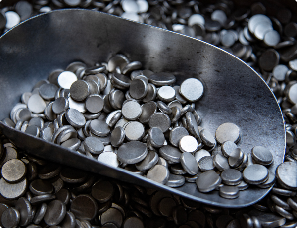

Pendentes de Aprovação
3
Redução de tempo de setup na linha 3
Gestão de resíduos na fundição
Treinamento cruzado operadores
Problema & Objetivo
Problema: Setup da linha 3 excede 45 min, gerando 8% de perda diária de produtividade. Falta padronização no processo.
Objetivo: Reduzir para 25 min com shadowboard e procedimento visual na linha.
Antes & Depois

Antes
Ferramentas desorganizadas.

Depois
Shadowboard organizado.
Valor Gerado
Redução Tempo
-42%
45 → 26 minutos
Ganho OEE
+8%
No turno operacional
Decisão de Aprovação